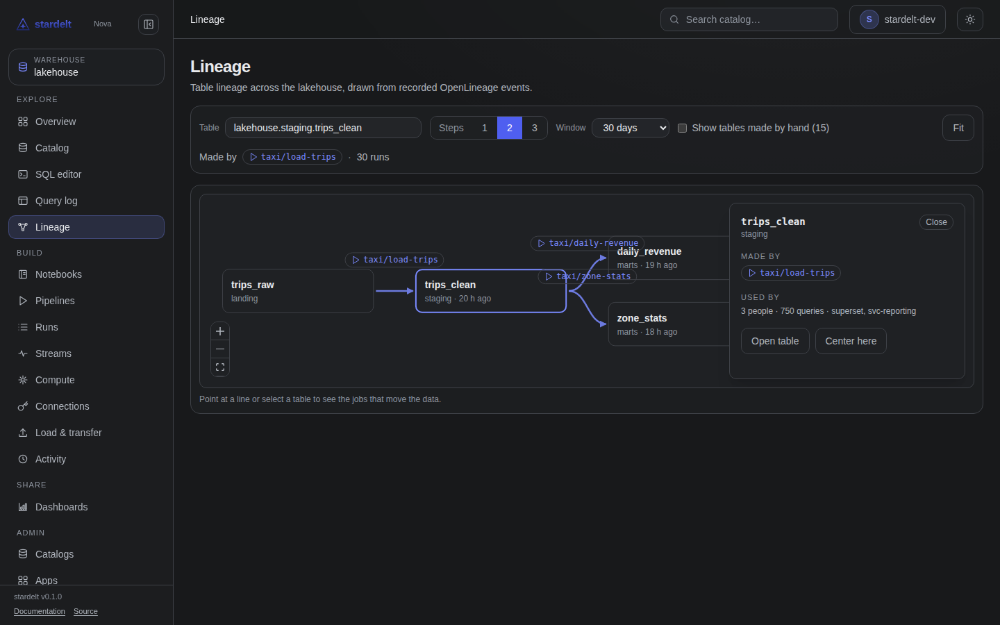

Nova answers it on every table: who makes it, what it is made from, and who uses it.
Three questions, one tab
Made by
The pipeline that writes it, its runs, and when it last ran.
Made from
The tables it is built from, grouped by distance.
Used by
The people, the tools and the number of queries.
The graph

Open graph draws the same data left to right: the tables that feed this one on the left, this table in the middle column and everything built from it on the right, one line per pair of tables.
Explore it
Click a table
A panel with Open table and Center here.
Steps and window
1–3 steps and 7, 30 or 90 days, both in the URL.
On a phone
Two lists instead of the drawing.
02
Where the edges come from
Two kinds of evidence
Queries
A query that writes draws an edge; a query that only reads is counted as a reader.
OpenLineage
POST /api/v1/lineage on Nova's in-cluster port, with no Ingress.
Kept at home
Edges 365 days, raw events 90 days, nothing sent to an external service.
Honest limits
The graph is table-level here, column-level sources are on the Columns tab, and it only knows what was recorded since it was turned on.